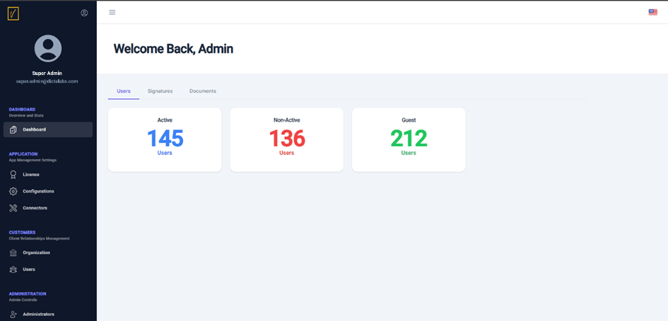

Access the vScrawl Admin Console
The default administrator can access the vScrawl Admin login page using the following URL:
https://domain-or-hostname-or-IP
Login Process
- Navigate to the login page at the URL above.
- Enter the default operator login credentials configured during the eTugra SSA installation.
- Click the Sign In button to access the admin console.

Admin Console Dashboard
Upon successful login, the vScrawl Admin Console Dashboard is displayed, providing high-level details such as: - Number of Signing Users - Signatures - Documents
These details are presented in separate tabs for easy navigation.

Recommended Initial Steps
To ensure secure and efficient administrative access, follow these steps: 1. Create a new role and an administrator to replace the default administrator account. 2. Set up mandatory connectors for external service providers, including: - Email server - Signing service
These configurations can be managed in the Application > Configurations > Default Settings screen.
The initial chapters of this guide cover these configurations in detail, while later sections provide information about additional administrative options.